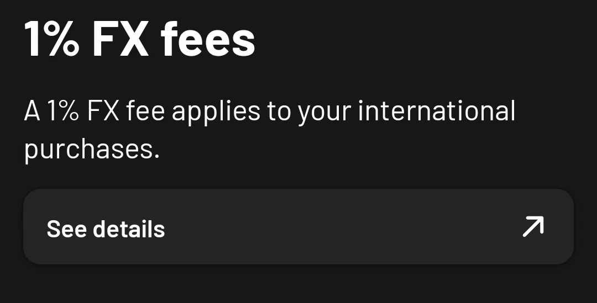
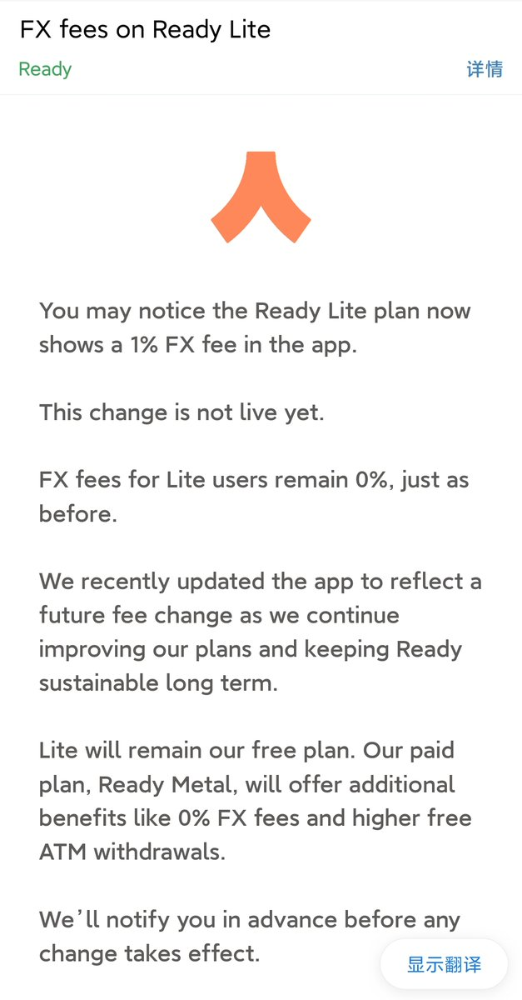
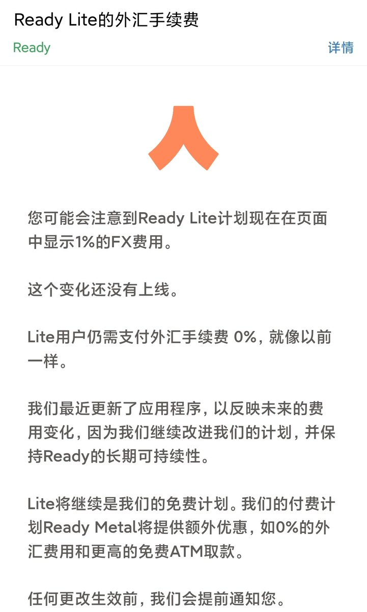

知名U卡Ready（人人卡） 偷偷给Lite用户增加了1%的外汇手续费（FTF），在刚刚发了邮件称不会对存量（remain）Lite用户收取这比费用，就像以前一样。
不过该卡还是蛮好用的，当初走KOL的推荐码开户年费85刀、免费DHL寄实体卡，算上首月10%的150刀返现，已回本。再加上每一笔3%返现，刚好跟支付宝和微信的外卡手续费相抵消，可惜现在没了。上周邀请朋友注册的时候，已经发现开户国家里面没有China了，前阵子论坛上也有奶友反馈开户审核慢，甚至 @ready_co 取消了所有在中国大陆消费的返现。
甚至拿万事达世界之极的卡可以在中国银行0开莫奈卡（当然汇丰香港蓝狮子也可以
这年头谁没有一张万事达世界卡呢🤔
不过该卡还是蛮好用的，当初走KOL的推荐码开户年费85刀、免费DHL寄实体卡，算上首月10%的150刀返现，已回本。再加上每一笔3%返现，刚好跟支付宝和微信的外卡手续费相抵消，可惜现在没了。上周邀请朋友注册的时候，已经发现开户国家里面没有China了，前阵子论坛上也有奶友反馈开户审核慢，甚至 @ready_co 取消了所有在中国大陆消费的返现。
甚至拿万事达世界之极的卡可以在中国银行0开莫奈卡（当然汇丰香港蓝狮子也可以
这年头谁没有一张万事达世界卡呢🤔


